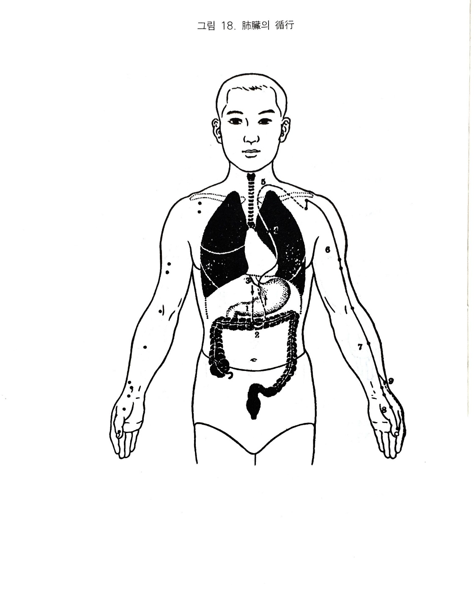

수태음폐경
7. 수태음폐경
1) 폐장의 색채
폐장은 수태음폐경의 근원이며 그 경락을 관장하고, 대장과 표리관계가 되며, 오행으로는 금성이며, 방위로는 서방이고, 계절로 배속하면 가을로서 숙살. 수렴하는 속성이 있다. 비를 통하여 기를 호흡하고 있고, 폐에서 온갖 맥기가 모였다 헤어졌다 하며 전신을 순환한다. 폐는 기를 주관하여 영위를 운행하는 기의 근원이 되며 피모로 영양을 보내 그 영화가 피모에 나타난다.
시진할 때 백색이 나타나면 체질적으로 또는 폐. 대장이 병에 걸리기 쉽거나 이미 발경되어 있는 것이다. 백색으로 윤기가 나면 생색이나 고골과 같으면 위태롭다. 체취. 구취 또는 배설물에서 비린내가 나며, 음식에서 신미를 좋아하는데 지나치면 상폐한다.
가을 기운은 조하므로 조한 것을 싫어하고 그 본체가 한성이라 한기도 싫어한다. 지나치게 염려하는 것은 폐병 환자에게서 자주 볼 수 있는 것이며, 또 염려를 지나치게 하면 폐가 손상되고 간혹 잘 운다.
폐의 규는 비이므로 폐액은 콧물이며, 폐병의 특색은 우선 기침하는 데 있다. 오래 누워 있으면 폐기가 손상된다. 폐는 혼을 간직한다.
2) 수태음폐경의 순행
위부 중완에서 시작하여 하행하여 대장에 락되고, 다시 대장에서 돌아와 위의 상구를 따라 상행해서 횡격막을 거쳐 폐장에 속한다. 여기에서 후두부에 이르러 좌우로 갈라진 후 액하로 가서 상비내측을 따라 내려가 주와에 이르고, 전비내측을 따라 모지단의 소상에서 끝난다.
분락은 열결에서 나누어져 차지 말단의 상양에 이르러 태양경의 기시점이 된다.
3) 폐경의 병증
(1) 호흡기계
폐경은 그 주된 병변이 우선 기침으로 나타난다. 그러므로 기침하거나 숨이 가쁘거나 천해가 심하여 헐떡거리기도 하고 한열도 있으며 심화가 핍박하면 구혈도 한다.
심폐는 호흡작용의 주가 되므로 재채기도 하며. 폐는 기를 주관하므로 기가 울체 되는 여러 가지 증상이 나타난다.
특히 허증이 되면 호흡하는 힘이 약해서 겨우 숨을 들여 마시며, 폐에 진액이 마르는 까닭에 마른기침을 하고, 심하게 허약해지면 폐결핵. 폐옹저가 발생하면서 호흡의 이상 현상으로 하품이나 기지개. 재채기도 한다.
폐는 한장이므로 냉하면 몸을 떨고, 폐는 장으로 음이며 피부는 양이 된다. 폐는 본체이며 피부는 그 자양하는 바이다. 표리의 기가 안팎에서 상승하므로 한열이 발생한다.
폐가 열사를 감수하면 실증이 되는데 먼저 찬물을 끼얹는 듯이 몸이 오싹오싹 춥고 몸에서 열이 나며 감모. 폐렴. 기관지염. 천식 등의 증상이 발생한다.
(2) 소화기계
폐에는 백맥이 모이는데, 양맥이 손상되면 토혈하고, 음맥이 손상되면 하혈하게 된다. 폐경은 중초에서 시작되며 대장에 연계되므로 폐가 허한하면 가래. 거품 등을 잘 토하고, 대장과 표리 관계이므로 설사를 한다.
기허하므로 소갈병이 생기고 폐는 기를 주관하므로 우기좌혈하므로 제부의 우측에 장통이 발생하면서 동계가 있다.
폐기가 태과하면 오른쪽 협하에 술잔을 엎어놓은 것과 같은 적취가 생긴다. 폐는 기를 주관하고 신은 기를 받아들이므로 서로 모자 관계이다.
기폐되어 순환되지 않으면 그 표리인 대장이 다쳐 대변을 보지 못하고 그 모자인 신이 다쳐서 소변을 보지 못한다.
폐는 추기이자 조기이므로 대소변이 통하지 않는다.
(3) 순환기계
폐금은 기의 주종이 되며 신수가 생하는 근원이 된다. 그러므로 기가 병들면 신수가 생하지 못하여 가슴이 답답해진다.
폐기가 허약해지면 피부에 작용해서는 오한발열이 발생하고, 혈맥에 작용하면 임파선염이 발생하며, 분육과 주리 사이에 작용하면 반신불수가 발생한다.
(4) 흉협복통류
폐기가 순환되지 않으면 그 경락이 흉부로 돌고 있어 가슴이 가득해지며 그 경락이 대장으로 연결되어 있으므로 심협. 소복에 동통이 온다. 폐적이 오른쪽 협하에 있으므로 협근이 땅기기도 한다.
폐에 열사가 있으면 흉격만민하고 폐는 흉중의 기이므로 흉배통이 발생한다.
(5) 운동기계
폐경락이 흉중에서 견내측을 돌아 모지에 이르고 있으며 폐유가 배부에 있으므로 그 표리인 대장경이 견박부를 돌고 있어 병사가 이 노선상에 침입하면 견. 배. 수비내전부. 결분 등에 통증이 오며, 또한 수태음폐경의 별맥이 열결로서 여기서 장중으로 직입 하므로 장중에서 열이 발생한다.
폐기는 신수의 모이나 선천적 신은 생기의 원천이 되어 폐가 병사에영향을 받으면 신 또한 같이 사기를 감수하므로 신. 방광계인 고. 고. 슬. 족 등에 동통이 있다.
폐열하여 폐엽에 염증이 생기면 상열하허하여 다리가 여위고 . 붓고. 아프며. 시리고. 절룩거리게 된다. 이 역시 금생수 하지 못해서 그렇다.
(6) 안이비인후구계
폐의 규는 비이므로 폐경에 사기가 침입하면 뉵혈이 나오며, 폐기가 허약해서 그 기능을 다하지 못하면 냄새를 맡지 못하고 코에 군살이 생겨 막히기도 한다. 폐에 열이 있으면 축농증이나 비후성비염 또는 콧등이 빨개진다.
폐금이 허약해서 신수가 부족해지니 목이 건조해지며 폐가 생리상 인후에 통해 있으므로 폐실사이며 목이 붓고 막히며 상풍이 되면 음성이 탁해진다.
금생수를 못해서 폐. 신이 약해지면 이롱이 되고, 폐열이 위로 들어가서 위열이 상승하면 설하에 황색이 된다.
(7) 비뇨기계
비폐의 기가 허해져 수도를 조절 보강하지 못하면 소변이 자주 마렵고 밤에 오줌을 싸며 시원하게 나오지 않고 빈삭하며, 혹은 사기가 침범하여 뇨색이 변하기도 한다.
(8) 정신계
폐의 지가 비이니 폐가 허약해지면 슬퍼하며, 폐기가 부족해지면 게을러 진다. 또한 심하면 전질이 발생하기도 한다.
(9) 기타
폐는 모피를 자양하니 사기가 침입하면 피부가 아프고, 풍성하면 은진. 창개가 발생한다. 폐허하여 모혈이 성글어지면 한출하고 열이 심해도 다한한다. 폐기가 허약해지면 화극금하여 화가 폐. 대장을 핍박함으로 인해 폐출혈 또는 대장출혈이 발생한다. 폐경의 사기가 혈맥에 작용하면 연주가 목이나 겨드랑이에 생긴다.

오수혈
소상(정,목)
엄지의 안쪽 손톱뿌리의 부분의 각진곳에서 1푼 떨어진 곳으로서 고전에서는 조갑의 각에서 부추잎 넓이 만큼 떨어진 곳이라 하였다. 뇌충혈, 황달, 편도선염(출혈시키는 것이 좋음), 수지의 경련이나 통증에 쓰인다.
어제(형,화)
엄지손가락의 안쪽을 밀어 올라가면 제1중수골의 상단과 수근골인 대다각골의 사이가 어제혈이다. 두통, 현훈, 뇌빈혈, 심계항진, 신열 기타 염증성 질환등에 쓰인다.
태연(수,토,원)
완관절내면의 상방으로 완골(팔뼈)과 대다각골(손바닥뼈)의 사이이니 수지를 대고 관절을 굴신하면 깊은 뼈짬이 나온다. 폐경의 원혈로서 호흡기계질환 전반에 응용되는 요혈로서 심장병, 두통, 뇌빈혈, 히스테리, 서경증, 인후염, 안질등에 쓰여진다.
경거(경,금)
완관절상방 1촌부위로 완골경상돌기의 아래쪽 즉 진맥하는 곳이니 우수는 비맥 좌수는 간맥을 보는 곳으로서 완골동맥이 뛰고 있다. 해소, 천식, 편도선염, 식도경련, 구토, 흠신(하품이나 기지개)기부족 기타 호흡기질환에 해열 발한혈로서 응용된다.
척택(합,수)
주관절을 반굴하여 두 손가락으로 힘줄을 쥐면 상하에 함중이 있으니 척택은 힘줄의 상함중이요, 하함중은 심포경의 곡택혈이다. 가슴이 답답하거나 호흡곤란시 천식. 해수(기관지염), 심장병, 편도선염, 유뇨증, 반신불수, 팔의 신경통에 쓰인다.